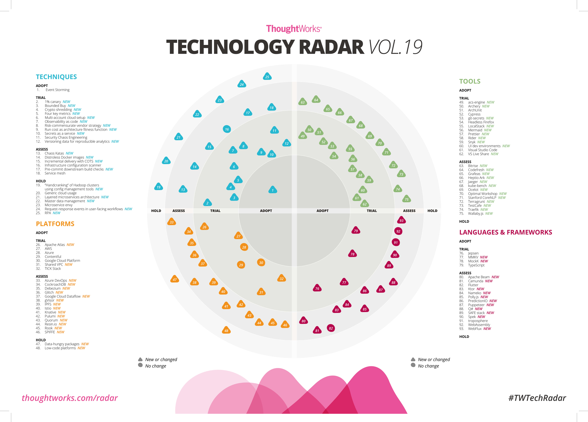
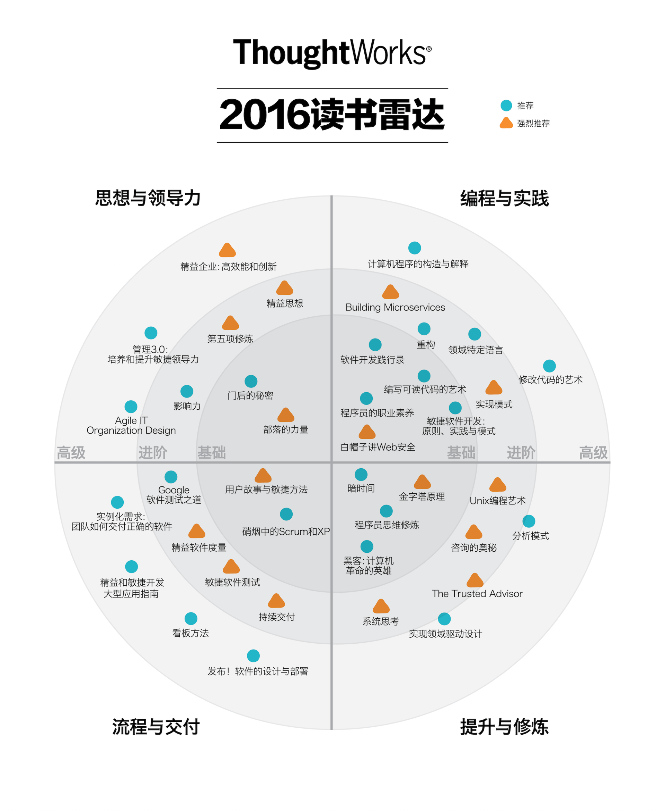
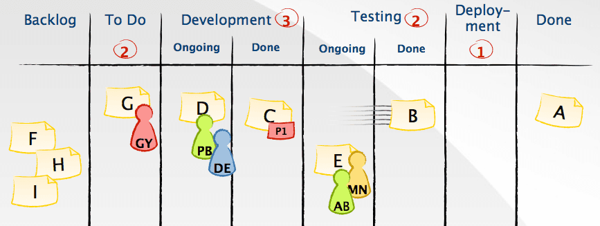

- 00 开篇词 程序员解决的问题，大多不是程序问题.md
- 01 10x程序员是如何思考的？.md
- 02 以终为始：如何让你的努力不白费？.md
- 03 DoD的价值：你完成了工作，为什么他们还不满意？.md
- 04 接到需求任务，你要先做哪件事？.md
- 05 持续集成：集成本身就是写代码的一个环节.md
- 06 精益创业：产品经理不靠谱，你该怎么办？.md
- 07 解决了很多技术问题，为什么你依然在“坑”里？.md
- 08 为什么说做事之前要先进行推演？.md
- 09 你的工作可以用数字衡量吗？.md
- 10 迭代0_ 启动开发之前，你应该准备什么？.md
- 11 向埃隆·马斯克学习任务分解.md
- 12 测试也是程序员的事吗？.md
- 13 先写测试，就是测试驱动开发吗？.md
- 14 大师级程序员的工作秘笈.md
- 15 一起练习：手把手带你分解任务.md
- 16 为什么你的测试不够好？.md
- 17 程序员也可以“砍”需求吗？.md
- 18 需求管理：太多人给你安排任务，怎么办？.md
- 19 如何用最小的代价做产品？.md
- 20 为什么世界和你的理解不一样？.md
- 21 你的代码为谁而写？.md
- 22 轻量级沟通：你总是在开会吗？.md
- 23 可视化：一种更为直观的沟通方式.md
- 24 快速反馈：为什么你们公司总是做不好持续集成？.md
- 25 开发中的问题一再出现，应该怎么办？.md
- 26 作为程序员，你也应该聆听用户声音.md
- 27 尽早暴露问题： 为什么被指责的总是你？.md
- 28 结构化：写文档也是一种学习方式.md
- 29 “懒惰”应该是所有程序员的骄傲.md
- 30 一个好的项目自动化应该是什么样子的？.md
- 31 程序员怎么学习运维知识？.md
- 32 持续交付：有持续集成就够了吗？.md
- 33 如何做好验收测试？.md
- 34 你的代码是怎么变混乱的？.md
- 35 总是在说MVC分层架构，但你真的理解分层吗？.md
- 36 为什么总有人觉得5万块钱可以做一个淘宝？.md
- 37 先做好DDD再谈微服务吧，那只是一种部署形式.md
- 38 新入职一家公司，怎么快速进入工作状态？.md
- 39 面对遗留系统，你应该这样做.md
- 40 我们应该如何保持竞争力？.md
- 划重点 “综合运用”主题内容的全盘回顾.md
- 划重点 “自动化”主题的重点内容回顾汇总.md
- 划重点 一次关于“沟通反馈”主题内容的复盘.md
- 划重点 关于“以终为始”，你要记住的9句话.md
- 划重点 关于“任务分解”，你要重点掌握哪些事？.md
- 加餐 你真的了解重构吗？.md
- 总复习 重新审视“最佳实践”.md
- 总复习 重新来“看书”.md
- 答疑解惑 如何分解一个你不了解的技术任务？.md
- 答疑解惑 如何在实际工作中推行新观念？.md
- 答疑解惑 如何管理你的上级？.md
- 答疑解惑 持续集成、持续交付，然后呢？.md
- 答疑解惑 持续集成，一条贯穿诸多实践的主线.md
- 结束语 少做事，才能更有效地工作.md
23 可视化：一种更为直观的沟通方式
作为一个程序员，在这个技术快速发展的时代，我们唯有不断学习，才能保证自己不为时代所抛弃。那你是怎么跟上技术发展步伐的呢？
就个人经验而言，我会关注一些技术网站，最典型的就是 InfoQ。这样，我可以快速了解到技术发展的动向，比如，什么时候出了个新东西、哪个项目又有了重大的更新、某些技术有了哪些新的应用场景等等。
另外，我还有一种更系统地了解新知识的方式：ThoughtWorks 技术雷达。之所以我很喜欢这种方式，因为它是“可视化”的。
什么是技术雷达？
ThoughtWorks 技术雷达是由 ThoughtWorks 技术咨询委员会（Technology Advisory Board）编写的一份技术趋势报告，每6个月发布一次。ThoughtWorks 的项目多样性足够丰富，所以它能够发现诸多技术趋势。因此，相比于行业中其它的预测报告，技术雷达更加具体，更具可操作性。
ThoughtWorks 是我的老东家，所以，我在接触技术雷达的时间很早。我在2013年就已经开始与人讨论微服务，并在项目中尝试使用 Docker，而这一切信息的来源都是技术雷达。不过，我这里想和你讨论并不是技术雷达到底有多优秀，而是带你看看技术雷达这种组织知识的可视化形式。-

（图片来源：ThoughtWorks 技术雷达）
技术雷达用来追踪技术，在雷达图的术语里，每一项技术表示为一个 blip，也就是雷达上的一个光点。
然后用两个分类元素组织这些 blip：象限（quadrant）和圆环（ring），其中，象限表示一个 blip 的种类，目前有四个种类：技术、平台、工具，还有语言与框架。
圆环表示一个 blip 在技术采纳生命周期中所处的阶段，目前这个生命周期包含四个阶段：采用（Adopt）、试验（Trial）、评估（Assess）和暂缓（Hold）。
每次技术雷达发布之后，我会特别关注一下“采用” 和 “暂缓”两项。
“采用”表示强烈推荐，我会去对比一下自己在实际应用中是否用到了，比如，在2018年11月的技术雷达中，事件风暴（Event Storming）放到了“采用”中，如果你还不了解 事件风暴 是什么，强烈建议你点击链接了解一下。
“暂缓” 则表示新项目别再用这项技术了，这会给我提个醒，这项技术可能已经有了更优秀的替代品，比如，Java世界中最常见的构建工具 Maven 很早就放到了“暂缓”项中，但时至今日，很多人启动新项目依然会选择 Maven，多半这些人并不了解技术趋势。
从这几年的发展趋势来看，技术雷达在“采用”和“暂缓”这两项上给出的推荐，大部分是靠谱的。
至于“试验”和“评估”两项，有时间的时候，我会慢慢看，因为它们多半属于新兴技术的试验区，主要的作用是用来让我开拓视野的。
雷达图是一种很好的将知识分类组织的形式，它可以让你一目了然地看到并了解所有知识点，并根据自己的需要，决定是否深入了解。
所以，我的前同事们借鉴了这个形式，做出了一个程序员的读书雷达，将程序员的应该阅读的书籍做了一个整理。-

- （图片来源：ThoughtWorks读书雷达）事实上，这种将内容通过可视化方式的组织起来的形式非常好用，ThoughtWorks 鼓励每个组织都建立自己的知识雷达，甚至提供了一个工具辅助你将雷达图构建出来。
在我看来，雷达图不仅仅适用于组织，也可以适用于团队。
我也曾经按照雷达图的方式将自己的团队用到的技术组织起来。把最需要了解的技术必须放在内环，比如：一个 Java 项目。我会要求程序员了解 Java，向外扩展的就是你在这个团队内工作会逐渐接触到的技术，比如，像 Docker 这种与部署相关的知识。至于最外面一层，就是被我们放弃掉的技术，比如，Maven。
这样一来，团队成员可以更清晰地了解到团队中所用的技术。当有新人加入团队时，这个雷达可以帮助新人迅速地抓住重点，他的学习路径就是从内环向外学习。所以，我也推荐你打造自己团队的技术雷达。
你是否想过，为什么雷达图的形式可以帮助你更好地理解知识呢？因为人的大脑更擅长处理图像。
可视化的优势
在远古时代，人脑处理的内容大多是图像，比如，哪里有新的果实，哪里猛兽出没，文字则是很久之后才产生的。现在普遍的一种说法是，大约在公元前3500年左右，许多文明才刚刚发展出书写系统，相比于人类的历史来说，这几乎是微不足道的。
就人脑的进化而言，处理图像的速度远远快于处理文字，所以，有“一图胜千言”的说法。
通过创建图像、图标或动画等进行信息交流的形式，就是可视化（Visualization）。可视化有很多种不同的分类，我们最常用的应该是数据可视化和信息可视化。
我在“你的工作可以用数字衡量吗”这篇文章里说过，我上班第一件事是“看”数字，这就是典型的数据可视化，而上面介绍的技术雷达，就属于信息可视化。
很多做软件的人习惯于用文字进行沟通，一般在软件开发过程中，需要编写各种文档，但并不是所有的场景，文字都是好的沟通方式，所以，也会有很多人尝试着将可视化应用在软件开发过程中。
估计大多数程序员最熟悉的表达方式应该是流程图，如果你做过软件设计，可能还听说过 UML（统一建模语言，Unified Modeling Language）。如果使用得当，这种方式会极大地提高表达的准确性，降低其他人理解的门槛。
在日常工作中，你最熟悉的可视化方式，大概就是在纸上或白板上画的图。以我的经验看，很多人画这个图太随意，如果你也是这样，我给你一个建议，先写字后画框，这样图会显得整洁一些。
什么是看板？
我们再来看一个实践，这就是将“可视化”应用在工作中的典型案例：看板。
看板，是一种项目管理工具，它将我们正在进行的工作变得可视化。这个实践来自精益生产，前面讲精益创业时，我给介绍了“精益”这个来自丰田公司的管理理念。精益的理念在软件行业已经非常流行了，很多软件开发实践都是从“精益”而来，看板就是其中之一。

看板属于那种几乎是看一眼就知道怎么用的实践。它将工作分成几个不同的阶段，然后，把分解出来的工作做成一张卡片，根据当前状态放置到不同的阶段中。如果你采用了我们专栏之前讲过的用户故事，那么每个用户故事就是一张卡片。
在实际工作中，每当一个工作完成之后，它就可以挪到下一个阶段，工作怎么算完成就是由我们前面提到的 DoD 来决定的。
当然，要用好看板，还可以使用一些小技巧。比如，用不同颜色的卡表示不同类型的工作，给每个人一个头像，增添一些乐趣。
看板可以帮助你一眼看出许多问题，比如，你的团队中有5个人，却有8个正在进行的任务，那一定是有问题的。因为一个人多线程工作，效果不会好。用“精益”的术语来说，我们应该限制 WIP（Work-In-Progress）；再有，如果待开发的卡最多，那就证明现在的瓶颈在于开发，而不是其它阶段。
运用看板的方式，还有一个有趣的细节：使用实体墙还是电子墙。实体墙不难理解，就是找一面墙把看板做出来。现在有很多公司专门在做协同办公软件，其中的项目管理部分用到的就是看板理念，这就是电子墙的由来。
关于这点，顺便说一下我的建议，如果你的团队是在一起工作的，请考虑使用实体墙，除非你的办公空间实在太小。因为它可以方便地调整，也可以当作站会的集合地点，还可以让别人看见你们的工作或是问题，这样做的最大优势在于增强了人与人的互动。
电子墙的优势在于，随处可访问、数据不会丢失、便于统计等等，但每次访问它，都需要专门打开电脑，还是比较麻烦的。一种将二者结合的办法是，使用一个大电视，专门用来展示电子墙。
总之，看板就是要让工作在大家面前展现出来。
总结时刻
我给你介绍了一种结构化学习新知识的方式：技术雷达。
技术雷达就是一种将技术信息组织起来的方式。它通过将技术按照“象限”和“圆环”两个维度进行分类，让人可以直观地看到并理解不同的技术所处的发展阶段。
雷达图是一种很好的形式，不仅可以用在组织技术，还可以用来组织其它信息，比如，读书雷达。每个公司都可以利用雷达图的形式组织自己所有的技术，每个团队也可以利用雷达图的形式组织自己团队用到的技术，这样，方便团队成员结构化地理解用到技术，也方便新人的学习。
雷达图实际上是一种可视化的方法，人脑对于图像处理速度更快，因此，可视化是改善沟通的一种方式。大多数软件过程习惯采用文字的方式进行表达，对于“可视化”利用的还不够。当然，还是有一些利用“可视化”的方法，比如，流程图、UML 等。
最后，我给你介绍了一个利用可视化进行信息沟通的实践：看板。看板把工作分成了几个不同的阶段，在看板上对应不同的列，然后，每个任务作为一张卡贴在上面。每完成一张卡，就把这张卡挪到下一个阶段。
看板可以帮你发现许多问题，比如，当前进展是否合适，是否有人同时在做很多的事，发现当前工作的瓶颈等等。
如果今天的内容你只能记住一件事，那请记住：多尝试用可视化的方式进行沟通。
最后，我想请你思考一下，你在工作中，有哪些用到可视化方法解决沟通问题的场景？欢迎留言区写下你的想法。
感谢阅读，如果你觉得这篇文章对你有帮助的话，也欢迎把它分享给你的朋友。
© 2019 - 2023 Liangliang Lee. Powered by gin and hexo-theme-book.